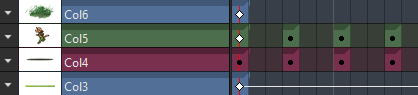

There is no longer a need to manually stretch out the exposure of your images!
In new scenes, by default each image holds its display in the Timeline (or Xsheet) until the next image is reached, a stop hold frame is encountered, or until the end of the scene.
This is a much faster way of working!
Existing scenes will still open with explicit holds (the old behavior).
Scenes can be converted to either implicit or explicit holds as needed from the Scene menu.
For compatibility with OpenToonz and older releases of Tahoma2D, implicit hold scenes do need to be converted to use explicit holds.
In Column Header context menu, Quick Toolbar or Preferences under Drawing, implicit holds can be disabled to return back to the explicit holds as the default.